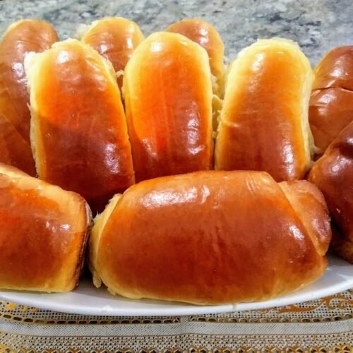

Sobre nós
Aqui, o cheirinho de pão quentinho encontra o calor de um bom papo. Somos uma padaria artesanal onde cada fornada é feita com tempo, cuidado e sabor.
Mais do que vender pães, queremos criar memórias. Seja no café da manhã com a família, no lanche da tarde ou naquele encontro rápido na calçada, nossa padaria é um ponto de encontro para quem aprecia simplicidade, afeto e tradição.
A padaria foi fundada em 2010, pela minha mãe, Dona Teresa. O carro-chefe é o pão de queijo caseiro.
Uma breve demonstração do nosso café veja abaixo:
Nossos produtos
Pães
| Categoria | Produto | Descrição breve | Preço | Imagem |
|---|---|---|---|---|
| Pães Artesanais | Pão de Fermentação Natural | Integral, multigrãos, com nozes | R$ 8,00 |  |
| Pães Tradicionais | Pão Francês | Crocante por fora, macio por dentro | R$ 0,80 |  |
| Pães Especiais | Pão de Azeitona | Com pedaços de azeitona preta | R$ 7,50 | |
| Pães Doces | Pão de Leite | Fofinho e levemente adocicado | R$ 1,20 |  |
| Pães Integrais | Pão Integral com Sementes | Com chia, linhaça e aveia | R$ 9,00 |  |
Doces
| Categoria | Produto | Descrição breve | Preço | Imagem |
|---|---|---|---|---|
| Doces | Croissant com Chocolate | Massa folhada leve, estilo francês | R$ 9,00 |  |
| Sobremesas | Brownie Artesanal | Com pedaços de chocolate belga | R$ 6,50 |
Bebidas
| Categoria | Produto | Descrição breve | Preço | Imagem |
|---|---|---|---|---|
| Bebidas Quentes | Cappuccino Artesanal | Com leite vaporizado e canela | R$ 7,00 |  |
| Bebidas Geladas | Coca-Cola | é um refrigerante por seu sabor único e refrescante. | R$ 5,00 |  |
| Bebidas Naturais | Sucos Naturais | Feitos na hora com frutas frescas da estação | R$ 7,00 |  |
Diferenciais
“ 🍞O pão quentinho que sua manhã merece.”
- 🧑🍳Produção artesanal de verdade
- 📜Receitas de família ou tradicionais
- 🥬Produtos fresquinhos o dia todo
- 🤝Atendimento próximo e acolhedor
Apresentação do site da padaria:
⏰Horarios de funcionamento
| Dias | Horas |
|---|---|
| Segunda-feira | Descanso da equipe |
| Terça-feira á domingo | 6:30 às 19h |
| Feriados | Não abrimos |
Espaço para café no local